Modelo de Despliegue
UMLModel
Dentware
::
Modelo de diseño
::
Modelo de Despliegue
Description
none
Diagrams

Diagrama de Despliegue
Properties
Name
Value
name
Modelo de Despliegue
stereotype
null
visibility
public
importedElements
viewpoint
Owned Elements
Diagrama de Despliegue
Artifact1
«artifact»SQLAlchemy
«artifact»Intel Pentium Dual CPU T2330 @ 1.60 GHz
«artifact»Google Chrome
«artifact»Blueprint
«artifact»Windows 7 Ultimate
Registrar paciente
Historia clínica
Exámenes auxiliares
Novedades
Odontograma
Crear historia clínica
Subir archivo exámenes auxiliares
Base de datos Dentware
Component1
«device»DESP004-Usuario - PC
«Execution environment»DESP005-SO
«Execution environment»DESP006-Página Web
«device»DESP013-Servidor
«Execution environment»DESP014-SO
«Execution environment»DESP015-Flask App
«Execution environment»DESP016-Sistema de archivos
«device»DESP017-Base de datos
ComponentInstance1
NodeInstance1
«device»DESP001-Usuario - PC
«Execution environment»DESP002-SO
«Execution environment»DESP003-Página Web
Registrar paciente
Historia clínica
Exámenes auxiliares
Novedades
Odontograma
«artifact»Google Chrome
«artifact»MiniOS7 PRO v2020.06 (basado en Windows 7)
«artifact»AMD A4-1250 APU @ 1.00 GHz
«device»DESP007-Usuario - PC
«Execution environment»DESP008-SO
«artifact»Intel Core i5-10210U CPU @ 1.60 GHz
«artifact»Windows 10
«artifact»Google Chrome
«Execution environment»DESP009-Página Web
Registrar paciente
Exámenes auxiliares
Historia clínica
Novedades
Odontograma
«device»DESP010-Usuario - PC
«Execution environment»DESP011-SO
«Execution environment»DESP012-Página Web
Registrar paciente
Historia clínica
Exámenes auxiliares
Novedades
Odontograma
«artifact»Windows 11
«artifact»Intel Core i7-10510U CPU @ 4.9 GHz
«artifact»Google Chrome
«artifact»Intel Core i7-10510U CPU @ 4.9 GHz
«artifact»Windows 11